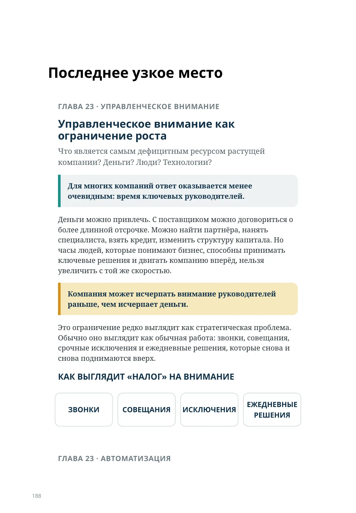
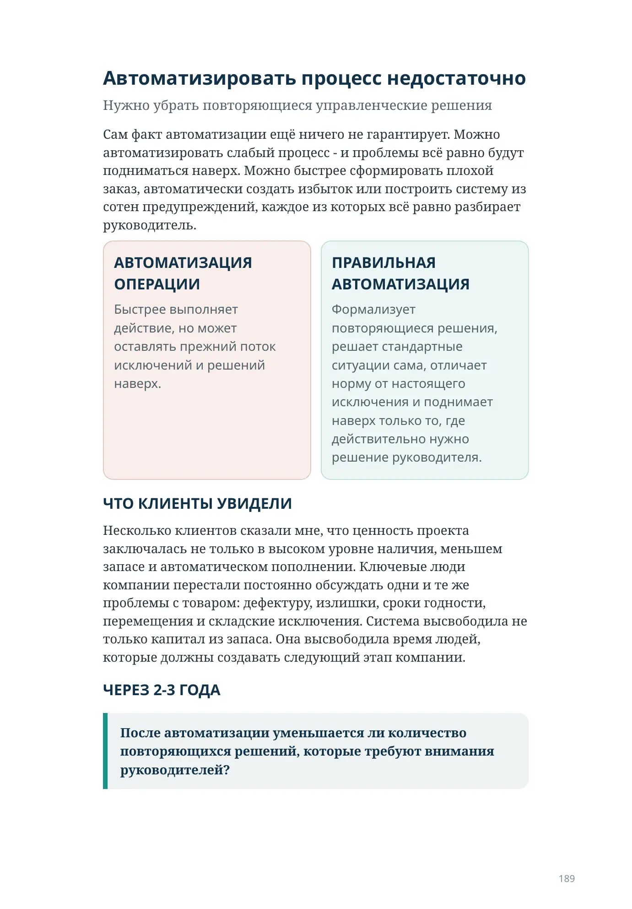
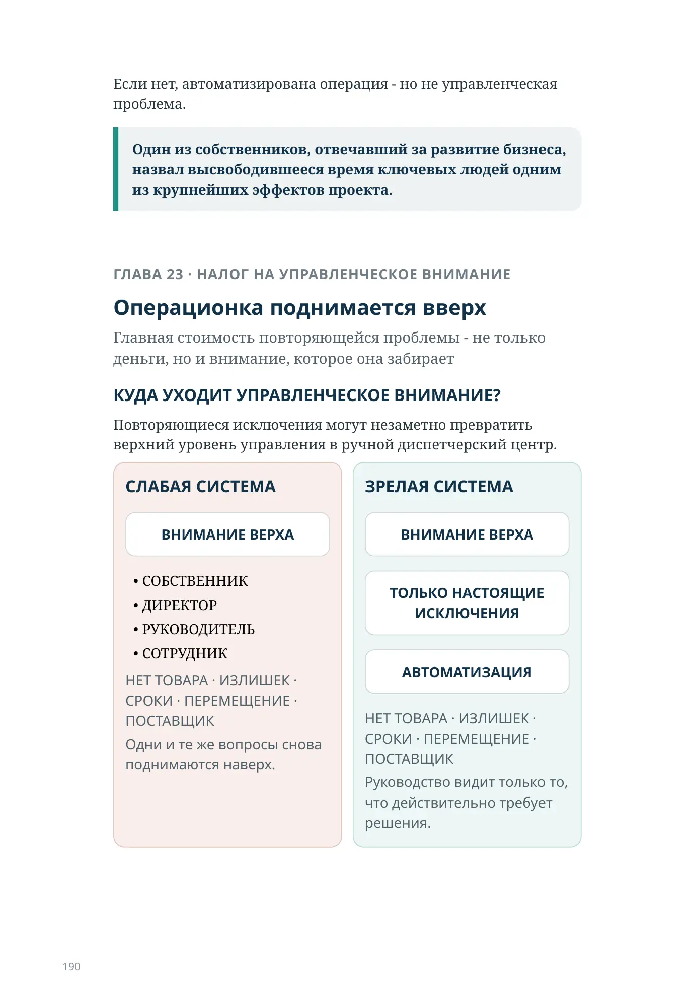
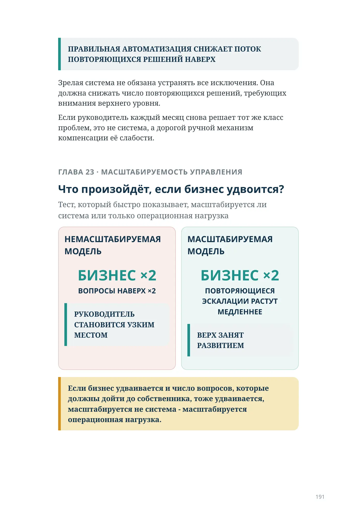
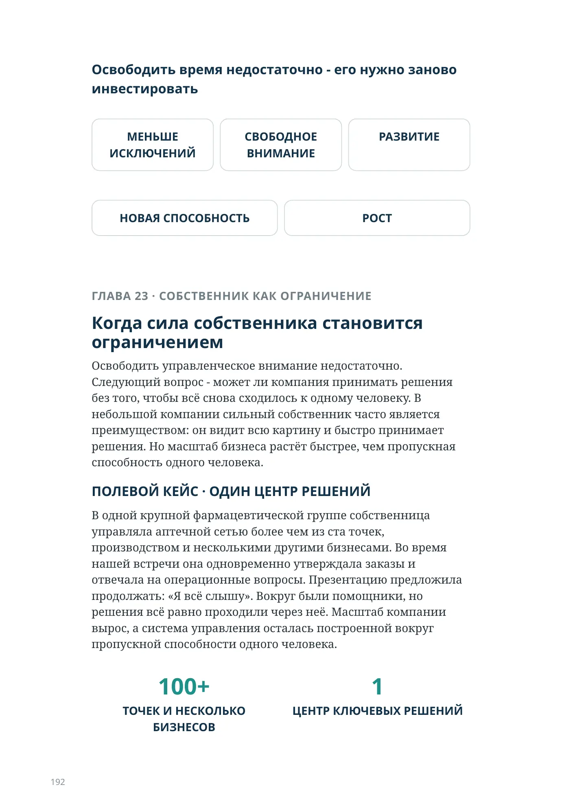
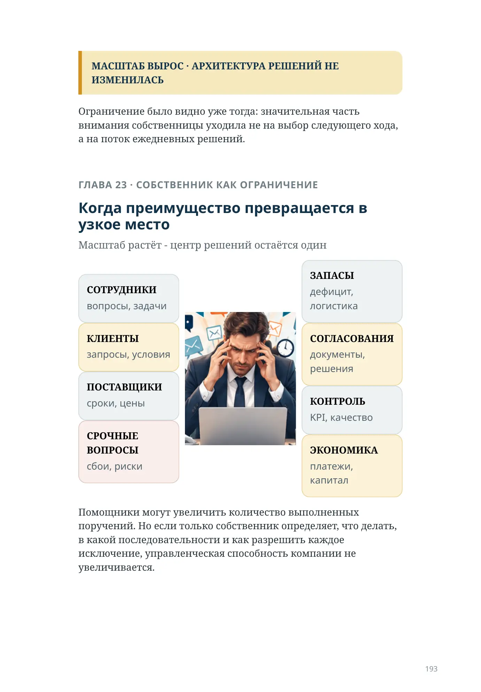
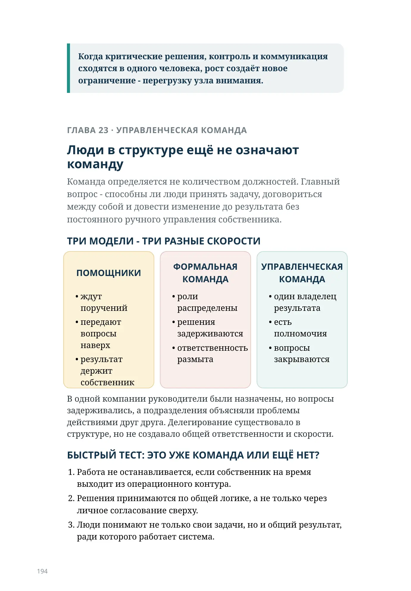
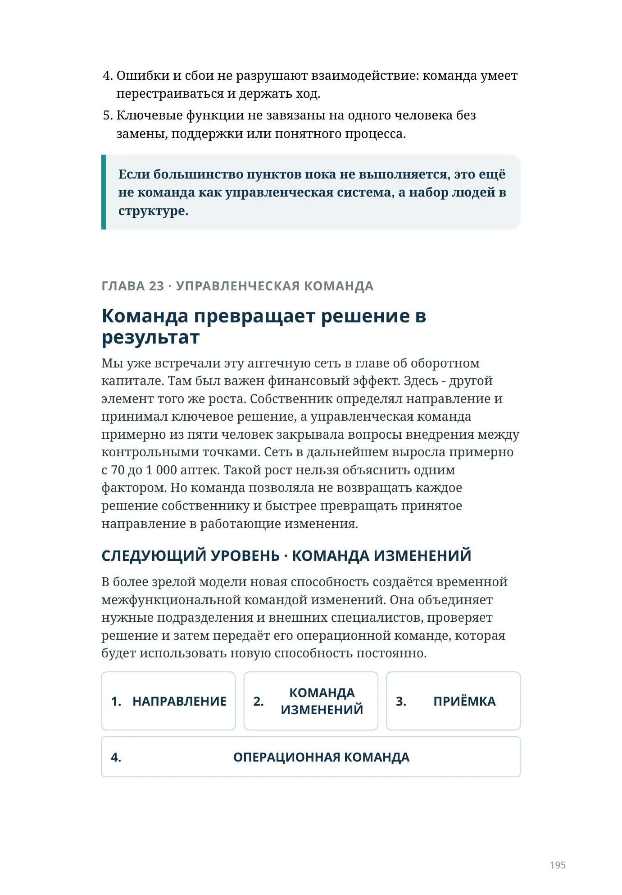
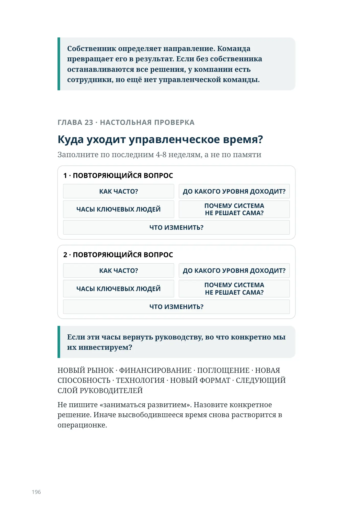

Последнее узкое место
ГЛАВА 23 · УПРАВЛЕНЧЕСКОЕ ВНИМАНИЕ
Управленческое внимание как ограничение роста
Что является самым дефицитным ресурсом растущей компании? Деньги? Люди? Технологии?
Для многих компаний ответ оказывается менее очевидным: время ключевых руководителей.
Деньги можно привлечь. С поставщиком можно договориться о более длинной отсрочке. Можно найти партнёра, нанять специалиста, взять кредит, изменить структуру капитала. Но часы людей, которые понимают бизнес, способны принимать ключевые решения и двигать компанию вперёд, нельзя увеличить с той же скоростью.
Компания может исчерпать внимание руководителей раньше, чем исчерпает деньги.
Это ограничение редко выглядит как стратегическая проблема. Обычно оно выглядит как обычная работа: звонки, совещания, срочные исключения и ежедневные решения, которые снова и снова поднимаются вверх.
КАК ВЫГЛЯДИТ «НАЛОГ» НА ВНИМАНИЕ
ЗВОНКИ
СОВЕЩАНИЯ
ИСКЛЮЧЕНИЯ
ЕЖЕДНЕВНЫЕ РЕШЕНИЯ
ГЛАВА 23 · АВТОМАТИЗАЦИЯ
Автоматизировать процесс недостаточно
Нужно убрать повторяющиеся управленческие решения
Сам факт автоматизации ещё ничего не гарантирует. Можно автоматизировать слабый процесс - и проблемы всё равно будут подниматься наверх. Можно быстрее сформировать плохой заказ, автоматически создать избыток или построить систему из сотен предупреждений, каждое из которых всё равно разбирает руководитель.
АВТОМАТИЗАЦИЯ ОПЕРАЦИИ
Быстрее выполняет действие, но может оставлять прежний поток исключений и решений наверх.
ПРАВИЛЬНАЯ АВТОМАТИЗАЦИЯ
Формализует повторяющиеся решения, решает стандартные ситуации сама, отличает норму от настоящего исключения и поднимает наверх только то, где действительно нужно решение руководителя.
ЧТО КЛИЕНТЫ УВИДЕЛИ
Несколько клиентов сказали мне, что ценность проекта заключалась не только в высоком уровне наличия, меньшем запасе и автоматическом пополнении. Ключевые люди компании перестали постоянно обсуждать одни и те же проблемы с товаром: дефектуру, излишки, сроки годности, перемещения и складские исключения. Система высвободила не только капитал из запаса. Она высвободила время людей, которые должны создавать следующий этап компании.
ЧЕРЕЗ 2-3 ГОДА
После автоматизации уменьшается ли количество повторяющихся решений, которые требуют внимания руководителей?
Если нет, автоматизирована операция - но не управленческая проблема.
Один из собственников, отвечавший за развитие бизнеса, назвал высвободившееся время ключевых людей одним из крупнейших эффектов проекта.
ГЛАВА 23 · НАЛОГ НА УПРАВЛЕНЧЕСКОЕ ВНИМАНИЕ
Операционка поднимается вверх
Главная стоимость повторяющейся проблемы - не только деньги, но и внимание, которое она забирает
КУДА УХОДИТ УПРАВЛЕНЧЕСКОЕ ВНИМАНИЕ?
Повторяющиеся исключения могут незаметно превратить верхний уровень управления в ручной диспетчерский центр.
СЛАБАЯ СИСТЕМА
ВНИМАНИЕ ВЕРХА
- СОБСТВЕННИК
- ДИРЕКТОР
- РУКОВОДИТЕЛЬ
- СОТРУДНИК
НЕТ ТОВАРА · ИЗЛИШЕК · СРОКИ · ПЕРЕМЕЩЕНИЕ · ПОСТАВЩИК
Одни и те же вопросы снова поднимаются наверх.
ЗРЕЛАЯ СИСТЕМА
ВНИМАНИЕ ВЕРХА
ТОЛЬКО НАСТОЯЩИЕ ИСКЛЮЧЕНИЯ
АВТОМАТИЗАЦИЯ
НЕТ ТОВАРА · ИЗЛИШЕК · СРОКИ · ПЕРЕМЕЩЕНИЕ · ПОСТАВЩИК
Руководство видит только то, что действительно требует решения.
ПРАВИЛЬНАЯ АВТОМАТИЗАЦИЯ СНИЖАЕТ ПОТОК ПОВТОРЯЮЩИХСЯ РЕШЕНИЙ НАВЕРХ
Зрелая система не обязана устранять все исключения. Она должна снижать число повторяющихся решений, требующих внимания верхнего уровня.
Если руководитель каждый месяц снова решает тот же класс проблем, это не система, а дорогой ручной механизм компенсации её слабости.
ГЛАВА 23 · МАСШТАБИРУЕМОСТЬ УПРАВЛЕНИЯ
Что произойдёт, если бизнес удвоится?
Тест, который быстро показывает, масштабируется ли система или только операционная нагрузка
НЕМАСШТАБИРУЕМАЯ МОДЕЛЬ
БИЗНЕС ×2ВОПРОСЫ НАВЕРХ ×2
РУКОВОДИТЕЛЬ СТАНОВИТСЯ УЗКИМ МЕСТОМ
МАСШТАБИРУЕМАЯ МОДЕЛЬ
БИЗНЕС ×2ПОВТОРЯЮЩИЕСЯ ЭСКАЛАЦИИ РАСТУТ МЕДЛЕННЕЕ
ВЕРХ ЗАНЯТ РАЗВИТИЕМ
Если бизнес удваивается и число вопросов, которые должны дойти до собственника, тоже удваивается, масштабируется не система - масштабируется операционная нагрузка.
Освободить время недостаточно - его нужно заново инвестировать
МЕНЬШЕ ИСКЛЮЧЕНИЙ
СВОБОДНОЕ ВНИМАНИЕ
РАЗВИТИЕ
НОВАЯ СПОСОБНОСТЬ
РОСТ
ГЛАВА 23 · СОБСТВЕННИК КАК ОГРАНИЧЕНИЕ
Когда сила собственника становится ограничением
Освободить управленческое внимание недостаточно. Следующий вопрос - может ли компания принимать решения без того, чтобы всё снова сходилось к одному человеку. В небольшой компании сильный собственник часто является преимуществом: он видит всю картину и быстро принимает решения. Но масштаб бизнеса растёт быстрее, чем пропускная способность одного человека.
ПОЛЕВОЙ КЕЙС · ОДИН ЦЕНТР РЕШЕНИЙ
В одной крупной фармацевтической группе собственница управляла аптечной сетью более чем из ста точек, производством и несколькими другими бизнесами. Во время нашей встречи она одновременно утверждала заказы и отвечала на операционные вопросы. Презентацию предложила продолжать: «Я всё слышу». Вокруг были помощники, но решения всё равно проходили через неё. Масштаб компании вырос, а система управления осталась построенной вокруг пропускной способности одного человека.
100+ТОЧЕК И НЕСКОЛЬКО БИЗНЕСОВ
1ЦЕНТР КЛЮЧЕВЫХ РЕШЕНИЙ
МАСШТАБ ВЫРОС · АРХИТЕКТУРА РЕШЕНИЙ НЕ ИЗМЕНИЛАСЬ
Ограничение было видно уже тогда: значительная часть внимания собственницы уходила не на выбор следующего хода, а на поток ежедневных решений.
ГЛАВА 23 · СОБСТВЕННИК КАК ОГРАНИЧЕНИЕ
Когда преимущество превращается в узкое место
Масштаб растёт - центр решений остаётся один
вопросы, задачи
запросы, условия
сроки, цены
сбои, риски

дефицит, логистика
документы, решения
KPI, качество
платежи, капитал
Помощники могут увеличить количество выполненных поручений. Но если только собственник определяет, что делать, в какой последовательности и как разрешить каждое исключение, управленческая способность компании не увеличивается.
Когда критические решения, контроль и коммуникация сходятся в одного человека, рост создаёт новое ограничение - перегрузку узла внимания.
ГЛАВА 23 · УПРАВЛЕНЧЕСКАЯ КОМАНДА
Люди в структуре ещё не означают команду
Команда определяется не количеством должностей. Главный вопрос - способны ли люди принять задачу, договориться между собой и довести изменение до результата без постоянного ручного управления собственника.
ТРИ МОДЕЛИ - ТРИ РАЗНЫЕ СКОРОСТИ
ПОМОЩНИКИ
- ждут поручений
- передают вопросы наверх
- результат держит собственник
ФОРМАЛЬНАЯ КОМАНДА
- роли распределены
- решения задерживаются
- ответственность размыта
УПРАВЛЕНЧЕСКАЯ КОМАНДА
- один владелец результата
- есть полномочия
- вопросы закрываются
В одной компании руководители были назначены, но вопросы задерживались, а подразделения объясняли проблемы действиями друг друга. Делегирование существовало в структуре, но не создавало общей ответственности и скорости.
БЫСТРЫЙ ТЕСТ: ЭТО УЖЕ КОМАНДА ИЛИ ЕЩЁ НЕТ?
- Работа не останавливается, если собственник на время выходит из операционного контура.
- Решения принимаются по общей логике, а не только через личное согласование сверху.
- Люди понимают не только свои задачи, но и общий результат, ради которого работает система.
- Ошибки и сбои не разрушают взаимодействие: команда умеет перестраиваться и держать ход.
- Ключевые функции не завязаны на одного человека без замены, поддержки или понятного процесса.
Если большинство пунктов пока не выполняется, это ещё не команда как управленческая система, а набор людей в структуре.
ГЛАВА 23 · УПРАВЛЕНЧЕСКАЯ КОМАНДА
Команда превращает решение в результат
Мы уже встречали эту аптечную сеть в главе об оборотном капитале. Там был важен финансовый эффект. Здесь - другой элемент того же роста. Собственник определял направление и принимал ключевое решение, а управленческая команда примерно из пяти человек закрывала вопросы внедрения между контрольными точками. Сеть в дальнейшем выросла примерно с 70 до 1 000 аптек. Такой рост нельзя объяснить одним фактором. Но команда позволяла не возвращать каждое решение собственнику и быстрее превращать принятое направление в работающие изменения.
СЛЕДУЮЩИЙ УРОВЕНЬ · КОМАНДА ИЗМЕНЕНИЙ
В более зрелой модели новая способность создаётся временной межфункциональной командой изменений. Она объединяет нужные подразделения и внешних специалистов, проверяет решение и затем передаёт его операционной команде, которая будет использовать новую способность постоянно.
- НАПРАВЛЕНИЕ
- КОМАНДА ИЗМЕНЕНИЙ
- ПРИЁМКА
- ОПЕРАЦИОННАЯ КОМАНДА
Собственник определяет направление. Команда превращает его в результат. Если без собственника останавливаются все решения, у компании есть сотрудники, но ещё нет управленческой команды.
ГЛАВА 23 · НАСТОЛЬНАЯ ПРОВЕРКА
Куда уходит управленческое время?
Заполните по последним 4-8 неделям, а не по памяти
Если эти часы вернуть руководству, во что конкретно мы их инвестируем?
НОВЫЙ РЫНОК · ФИНАНСИРОВАНИЕ · ПОГЛОЩЕНИЕ · НОВАЯ СПОСОБНОСТЬ · ТЕХНОЛОГИЯ · НОВЫЙ ФОРМАТ · СЛЕДУЮЩИЙ СЛОЙ РУКОВОДИТЕЛЕЙ
Не пишите «заниматься развитием». Назовите конкретное решение. Иначе высвободившееся время снова растворится в операционке.